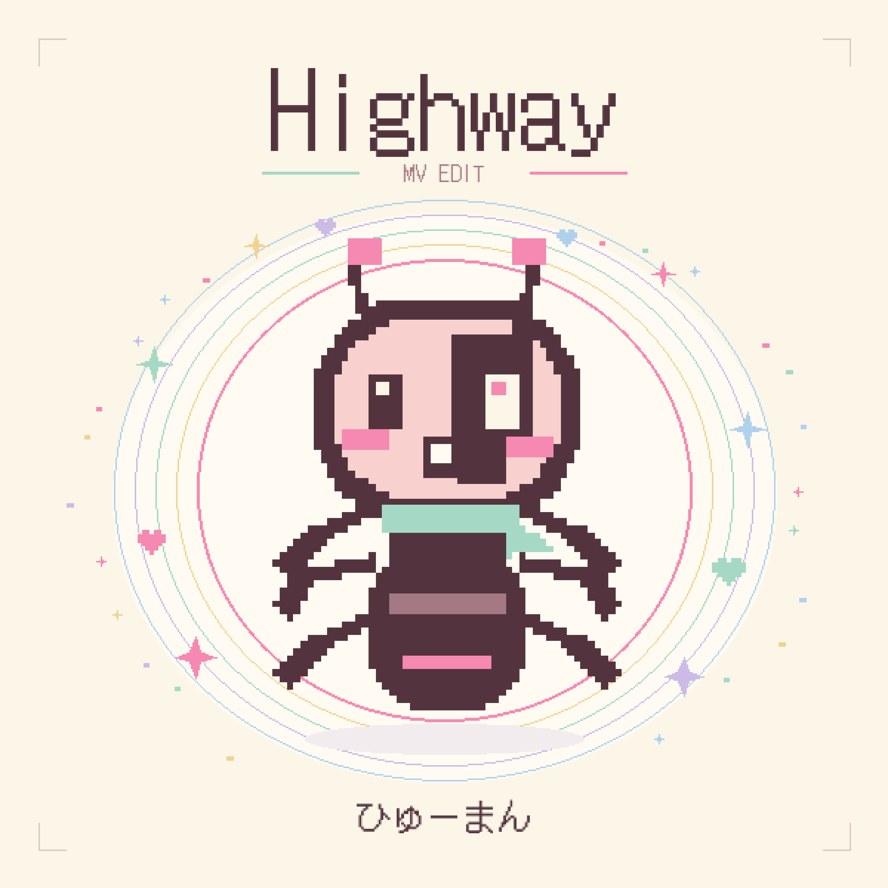

INDEPENDENT MUSIC LABEL / JAPAN
音と、
まだないもの。
小さな規則から、思いがけない音が生まれる。
ひゅーまんの音楽と映像を届けるレーベル、
vicugnaです。

NEWRELEASE
ひゅーまん / Highway (MV Edit)聴く ↗
SOUND, RULES & LITTLE DISCOVERIES01 — 08
THE CATALOGUE
音のならぶところ。
ABOUT VICUGNA
決まっているのに、
わからない。
FIND US ELSEWHERE
配信で聴く ↗映像を見る ↗お問い合わせ ↗